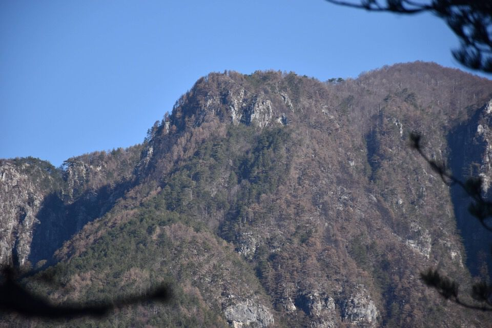
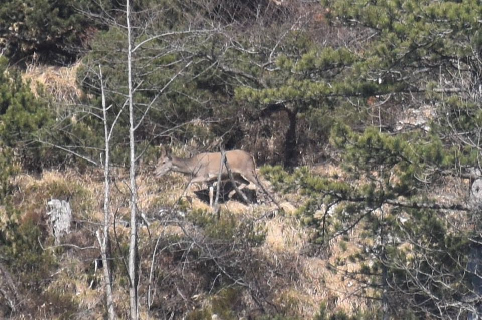
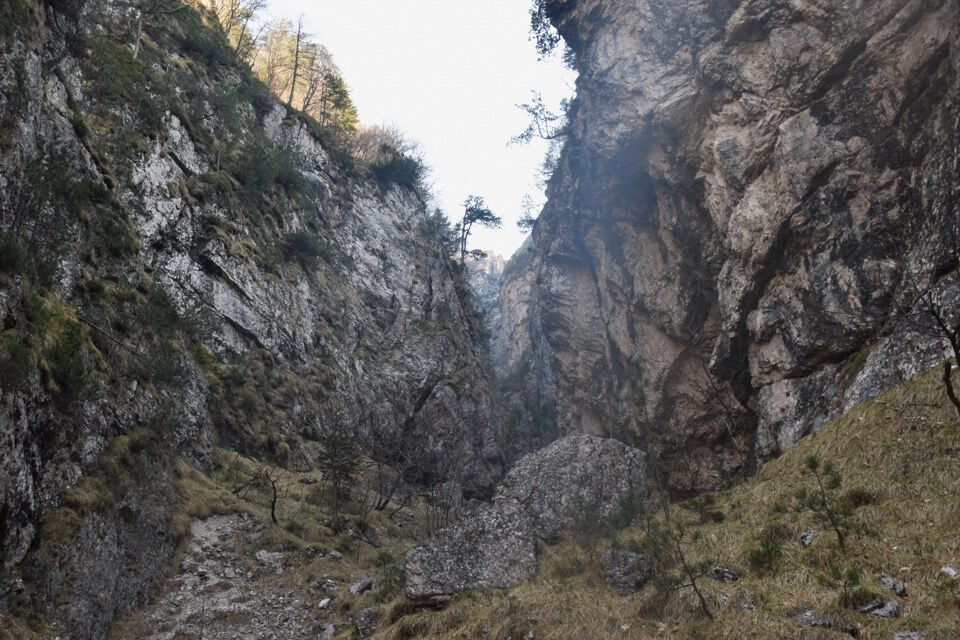
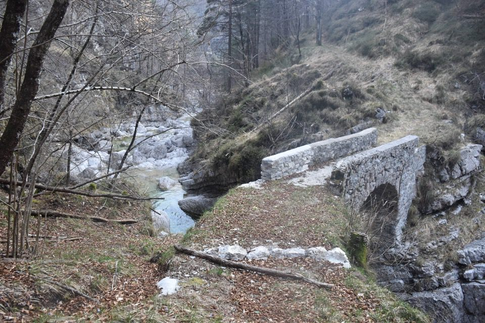

Sospettavo che il versante ovest del Cimadôrs celasse qualcosa: una traccia sospetta sulla carta Tabacco e diversi toponimi misteriosi (Cenglis, Cuel dal Lavorât, ecc.) sulla Carta Tecnica Regionale erano più che sufficienti per convincermi della cosa; poi la prima volta che salii sul Cuel da la Ruvîs ne ebbi la conferma visiva. Due settimane dopo riuscì a scattare qualche foto dalla cima del Cuel Mauròn (prima che si scaricasse la batteria...): il lavoro di ricerca era iniziato. Un sogno!
Qualche mese più tardi, durante la percorrenza dello stupendo sentiero dei boscaioli di val Tralba, non resistetti alla tentazione e chiesi ad Antonio Armellini se per caso ne sapesse qualcosa del versante ovest del Cimadôrs: in pochi secondi mi spifferò tutto! Mi disse che si trattava di un percorso di cengia, ben conosciuto dai cacciatori, che lui aveva percorso una decina d'anni addietro.
Queste vicende si sono svolte prima dell'incendio dell'estate 2024 che ha distrutto i boschi che sorreggono la conca di casera Cimadôrs, cingendo da est ad ovest il Cimadôrs Basso: che tristezza! Guarda questa foto, scattata durante la salita al Palòn dei Zàbus dal rio di Serai meno di un mese dopo la fine dell'incendio. Mi riferiscono che il sentiero che collega Morôlz col Cimadôrs Basso risulta gravemente compromesso, in quanto il pecòl da lis piouris è stato completamente arso; per miracolo sembra che il costone sud che sovrasta Moggessa di Là sia stato risparmiato, perlomeno lungo la linea spartiacque. E il percorso di cengia che fine avrà fatto? Bisogna andare a vedere.
Quando l'idea del percorso si materializzò nella mia mente, frutto di alcune supposizioni personali e null'altro, era un sogno pieno. Quando chiesi e ottenni qualche informazione a riguardo, la cosa perse irremediabilmente parte del suo fascino. Dopo averlo percorso, il sogno si è polverizzato, sbriciolato per sempre.
La malinconia mi assale: forse sarebbe stato meglio non averlo mai percorso?
È un discorso pericoloso, meglio passare all'asettico racconto dell'escursione.
Partiamo da Moggio: ecco, dopo aver valicato la Forca di Moggessa, il gruppo di cime afferenti al Cuel Mauròn, che è quello più innevato a destra.
Ecco il Cimadôrs Basso col dosso sud che ci apprestiamo a salire: come si vede bene, la parte finale è quella più arcigna.
E via su per il Cuel di Zòvet e il dosso sud del Cimadôrs Basso, inaspettatamente molto piacevole e rilassante da salire; l'ambiente bruciato è senz'altro affascinante.
Da notare grosse opere di spietramento e incisioni dei resinârs.
Verso Morôlz, col pecòl da lis piouris orridamente bruciato.
Proprio alla fine il dosso sud s'incattivisce: non nascondo che ero piuttosto preoccupato dato che proprio qui l'incendio ha fatto i danni peggiori.
Ma invece si passa bene e il sentiero è molto evidente.
Dalla cima del Cimadôrs Basso verso Cuel da la Ruvîs, Cuel dal Lacéit e Cuel di Fedevèiz.
Il mitico Cuel di Fedevèiz visitato appena qualche settimana fa.
Oltre gli alberi appare imponente la cima de Pale del Laris, magnifica vista da qui.
Imbocchiamo la cengia.
Verso il Cuel dal Lavorât.
È assolutamente incredibile trovare, quando si è già ben inoltrati sopra la val Nuviernulis, resti di una costruzione sul cengione boscoso, a picco sul Glagnò.
Altro segno di frequentazione passata.
Cimadôrs selvaggio.
La parte più bella e stretta della cengia.
Dopo questo tratto c'è una zona piuttosto delicata in quanto completamente bruciata. Il rischio di caduta pietre dell'alto è concreto, motivo di turbamento per me.
Il Cuel da l'Omp con l'omonima forcella.

Girato l'angolo, dove peraltro si trova il passaggio più impegnativo (un passo del gatto obbligato e molto esposto), si monta sulla pala di faggi del Cuel de l'Ortuz. Una trappola perché ci sono salti da tutte le parti! Non so dove vadano i camosci, ma i cacciatori un passaggio (alpinistico) lo conoscono, anche se è difficile da trovare. Siccome è roba segreta dei cacciatori, do informazioni solo in privato.
Dal Cuel de l'Ortuz scruto il versante che ho davanti: che si possa continuare lungo quella cengia?
Proprio in quell'istante vedo qualcosa che si muove... un cervo!
Il rio Ortuz che penso si possa risalire.
Ancora Pale dal Laris: strepitosa e imponente vista da qui!
Sani e salvi.
Impressionante osservare con cognizione il versante ovest del Cimadôrs, con a metà un tratto della cengia percorsa.
Uno spettacolo: in val Nuviernulis c'è acqua da tutte le parti!
Giuro che prima o poi salgo sul Sernio da Moggio risalendo la val Nuviernulis (non che ci sia mai salito ancora...).
Eccoci a Moggessa di Là: è ancora lunga e soprattutto è in salita...
***
Non esiste alcun modo di stabilire quale decisione sia la migliore, perché non esiste alcun termine di paragone. L'uomo vive ogni cosa subito per la prima volta, senza preparazioni. Come un attore che entra in scena senza aver mai provato. Ma che valore può avere la vita se la prima prova è già la vita stessa? Per questo la vita somiglia sempre a uno schizzo. Ma nemmeno «schizzo» è la parola giusta, perché uno schizzo è sempre un abbozzo di qualcosa, la preparazione di un quadro, mentre lo schizzo che è la nostra vita è uno schizzo di nulla, un abbozzo senza quadro.
«Einmal ist keinmal». Tomàš ripete tra sé il proverbio tedesco. Quello che avviene soltanto una volta è come se non fosse mai avvenuto. Se l'uomo può vivere solo una vita, è come se non vivesse affatto.